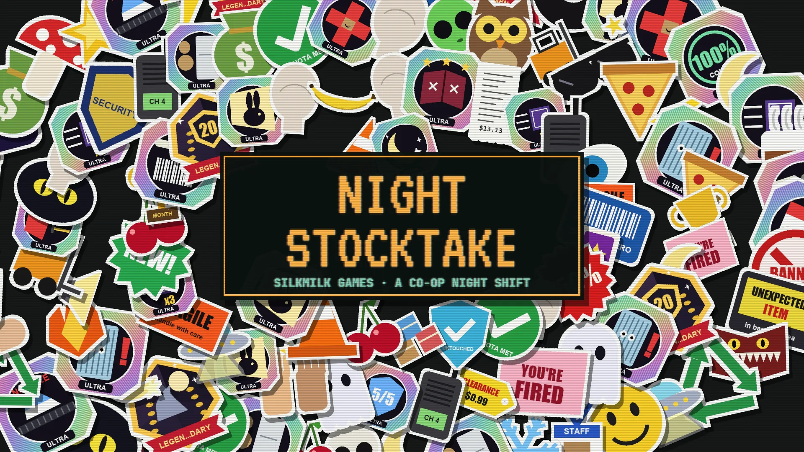
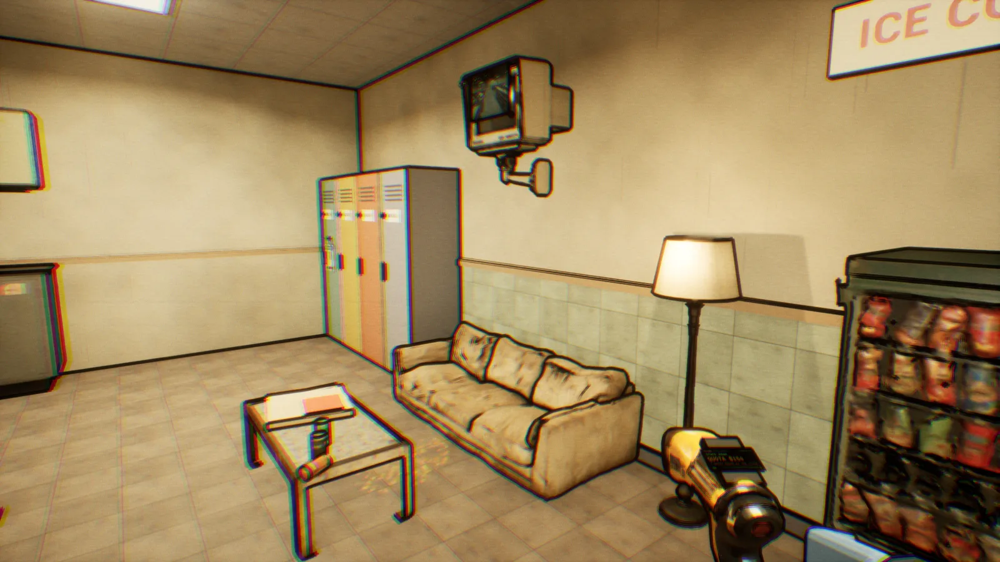
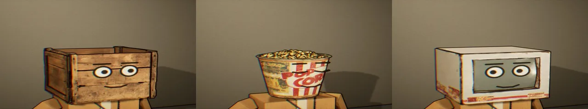

Kit de prensa
Todo lo que necesitas para escribir sobre Night Stocktake, transmitirlo o cubrirlo. Todos los recursos se pueden usar libremente en artículos y videos.
Los datos
TIENDA #0412
Hasta cuatro trabajadores nocturnos hacen el inventario de un hipermercado que se reorganiza cuando nadie mira. Escanea, carga, entrega la cuota y sal a las seis.

Sobre el juego
Night Stocktake es un juego de terror cooperativo sobre el peor turno de noche del comercio. Marca entrada con hasta tres amigos, toma un escáner y un carrito y cuéntalo todo en un hipermercado que no se queda quieto: las luces parpadean, las estanterías se reorganizan y las secciones cambian de lugar en cuanto nadie mira. El mapa de tu tableta es una instantánea que se desactualiza.
Seis cosas trabajan de noche contigo: maniquíes que solo se mueven cuando nadie los ve, un libro que muerde, un cliente cerca del que no debes escanear, un montacargas que nunca frena, una cajera que escanea a quien se ponga en su línea y un guardia que revisa credenciales. Cumple la cuota, marca la salida a las seis y gasta tu sueldo en tarjetas de cliente, stickers, cabezas, sombreros y skins de escáner.
Características principales
- Turnos de noche cooperativos en línea para 1-4 jugadores
- Una tienda que se reorganiza cuando nadie la observa
- Física: carritos tambaleantes, mercancía que se cae, refrigeradores para dos personas
- Seis amenazas que cazan por el ruido, cada una a su manera
- 85 stickers de logros para tu credencial y tu cabeza de caja
- Personalización de la cabeza de caja: cabezas, sombreros, calzado, caras, skins de escáner, casilleros
Transmítelo. Monetízalo.
- Puedes transmitir, grabar y publicar videos de Night Stocktake en YouTube, Twitch, TikTok, Kick y cualquier otra plataforma.
- Puedes monetizar esos videos y transmisiones (anuncios, suscripciones, patrocinios, programas de socios). No necesitas permiso ni licencia por escrito.
- La música y los efectos de sonido del juego no están registrados en Content ID. Si alguna vez recibes una reclamación por material de Night Stocktake, avísanos y te ayudaremos a liberarlo.
- Puedes usar los logos, el arte principal y las capturas de esta página en miniaturas y artículos.
- No des a entender que tu contenido está hecho, patrocinado o respaldado por StaleMilk Games, salvo que lo esté.
- Agradecemos un enlace al juego en tu descripción, pero no es obligatorio.
Podemos actualizar esta política; se aplica la versión publicada en esta página.

Logos, arte principal, capturas
Haz clic para verlas a tamaño completo. Todo (en PNG) está en presskit.zip.

Arte principal Arte principal, sin logo
Arte principal, sin logo
 Tarjeta para redes 1200×630
Tarjeta para redes 1200×630







 Maniquí
Maniquí Libro
Libro Cliente
Cliente Montacargas
Montacargas Guardia
Guardia